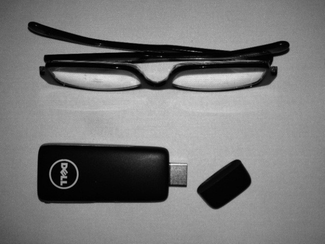
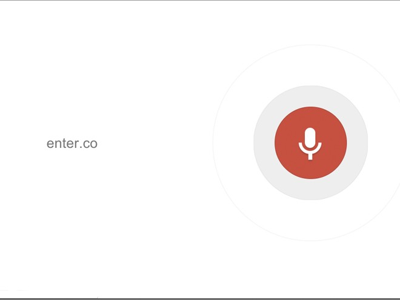

El computador USB de Dell podría llegar al mundo este año

Un computador con Android ahí. Imagen: Quartz
En medio de unos días importantes para Dell, la empresa viene con un ambicioso proyecto que podría transformar cualquier dispositivo con una salida HDMI en un computador. Se llama Project Ophelia y lo presentaron hace unos meses
durante el CES de este año
.
Ahora sabemos que el proyecto podría llegar al mundo en poco tiempo.
Básicamente se trata de un computador del tamaño de una memoria USB que podría conectarse a periféricos como un teclado y un mouse via Bluetooth y WiFi.
Además vendría equipado con con procesador dual-core Cortex A9 de 1.6 GHz, 8 GB de capacidad de almacenamiento y un puerto micro SD para transferir información fácilmente de un computador a otro.
El computador correría Android 4.1.2 y todo tipo de aplicaciones disponibles en Google Play Store. La idea es que este sea un dispositivo para utilizar rápidamente y que se pueda cargar para todas partes.
Sería un computador al alcance en cualquier momento, todo por el cómodo precio de 100 dólares.
Dell mostrará a Ophelia en acción durante la conferencia de Sinergía Citrix en Los Ángeles en esta semana.
El director ejecutivo de los clientes en la nube de la empresa habló
con PC World
y les dijo que han
“hecho un número de cosas en el software del producto y en su exterior que lo harán muy interesante”
.
Las primeras unidades serán entregadas a desarrolladores para que empiecen a trabajar en aplicaciones exclusivas para él.
En agostó estará disponible para empresas de cable y operadores que lo quieran ofrecer con plan de datos o paquetes de cable en Estados Unidos. Poco después de ese tiempo estará disponible para clientes en la página de Dell.
Según canalLA
, Ophelia estará en Latinoamérica en junio.
Chrome añade búsqueda por voz en la versión de escritorio

así luce la busqueda por voz de Google Chrome. Foto: Captura de pantalla
Google anunció la actualización de su explorador Chorme a la versión 27,
informa The Next Web.
La actualización trae mejoras de velocidad, la cual
carga páginas web un 5% más rápido
que versiones anteriores, y
corrección de 14 fallos de segridad
. Sin embargo esta no es la novedad más importante de este explorador.
La principal primicia de Chrome es la posibilidad de realizar búsquedas por comandos de voz.
Esto permite a los usuarios buscar las cosas hablando, al estilo de Google Now.
Al entrar al buscador encontraremos un ícono en forma de micrófono, ahí se activa la función de búsqueda por voz.
El funcionamiento es bastante simple, solo hay que darle clic al botón y formular una pregunta: ¿Quién es el presidente de Colombia? Google asimila la orden y arroja los resultados más acertados.
Google Chrome 27 está disponible para Windows, Mac OS X y Linux.
La actualización ya está disponible para descargar desde la página oficial de Google y si ya hace uso del explorador, este se actualizará automáticamente a la versión 27.
Sin embargo según
reporta Mashable
, las preguntas especificas pueden ser un inconveniente a la hora de encontrar resultados, aunque trata de dar lo mas cercano a lo indagado.
Google no dejo solo a la versión de escritorio,
Chrome para Android también tuvo su actualización
.
Ahora tiene navegación en pantalla completa, una característica útil para aquellos usuarios que cuenten con pantallas algo pequeñas o que no quieran la distracción constante de la interfaz
. También incluye búsquedas simplificadas las cuales son muy útil ya que permiten editar nuestros términos directamente en la caja de búsqueda. Así pues, Google incluye características anunciadas en el I/O a su explorador.